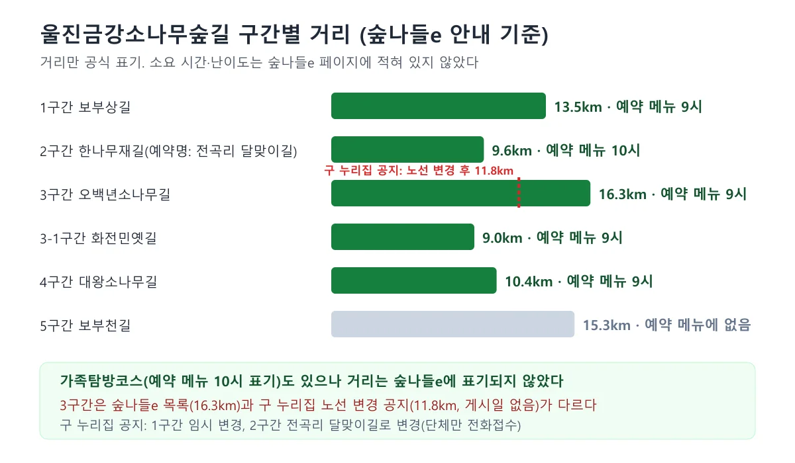
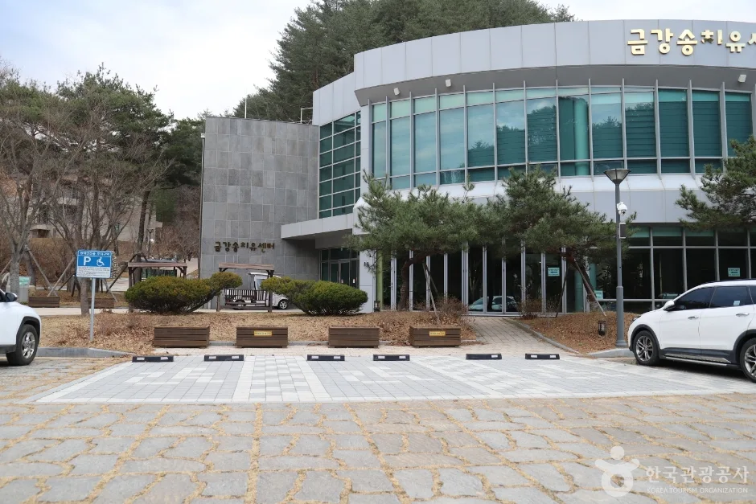
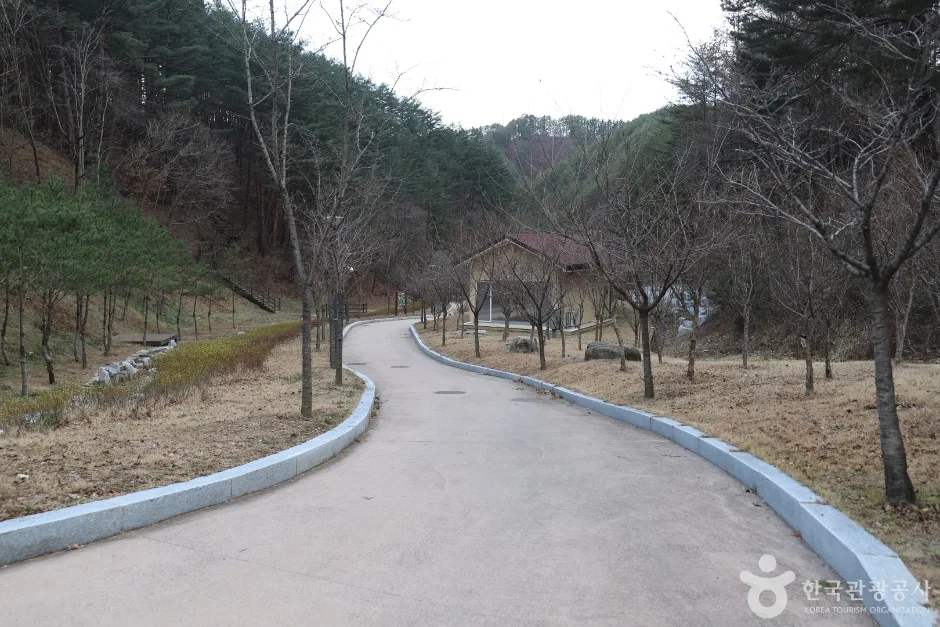
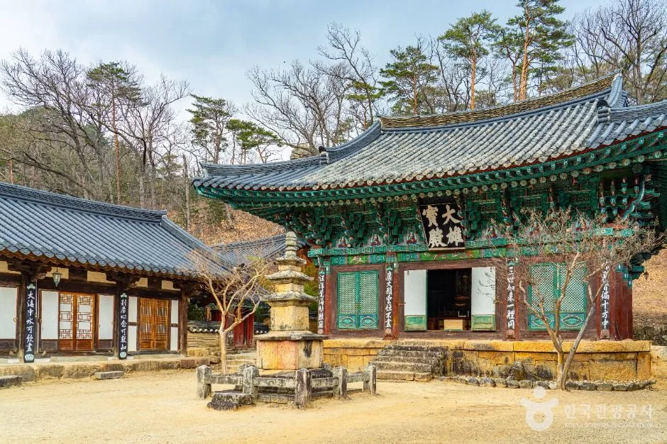
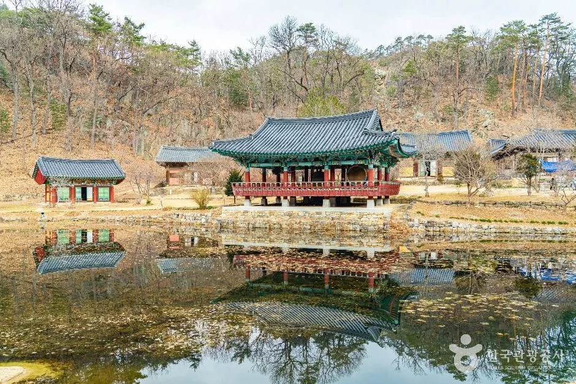
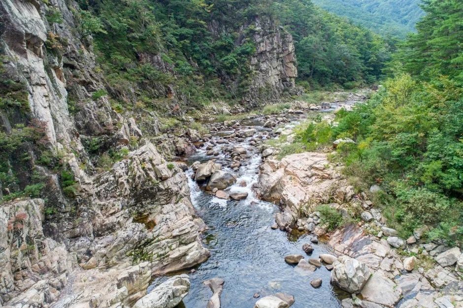
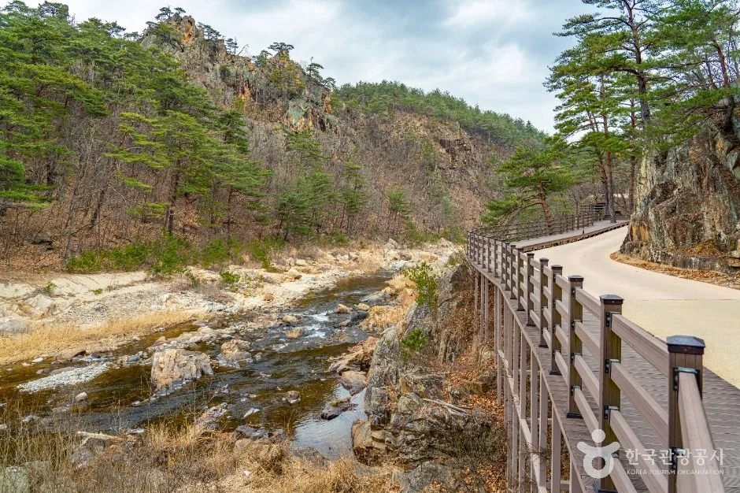
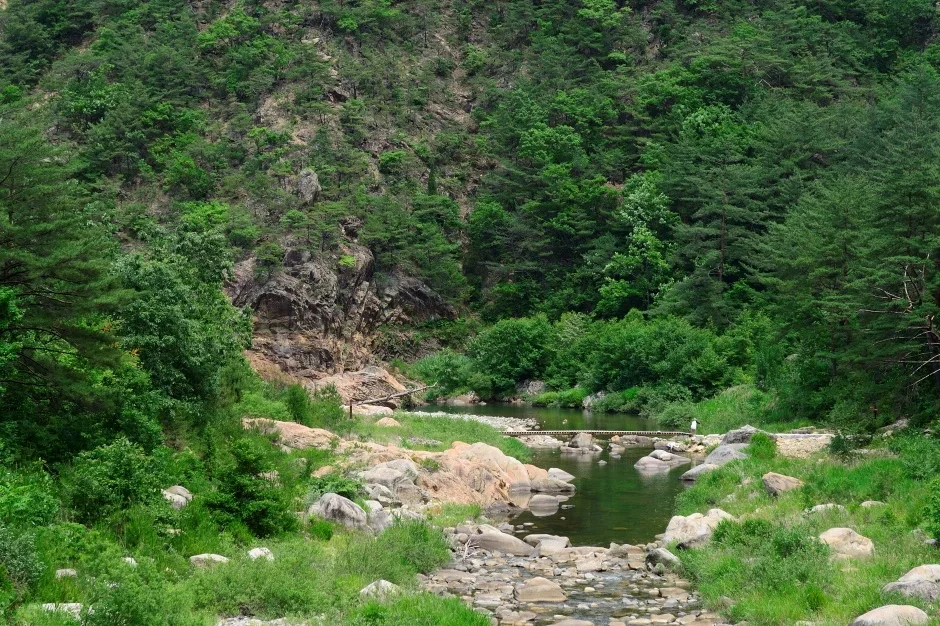
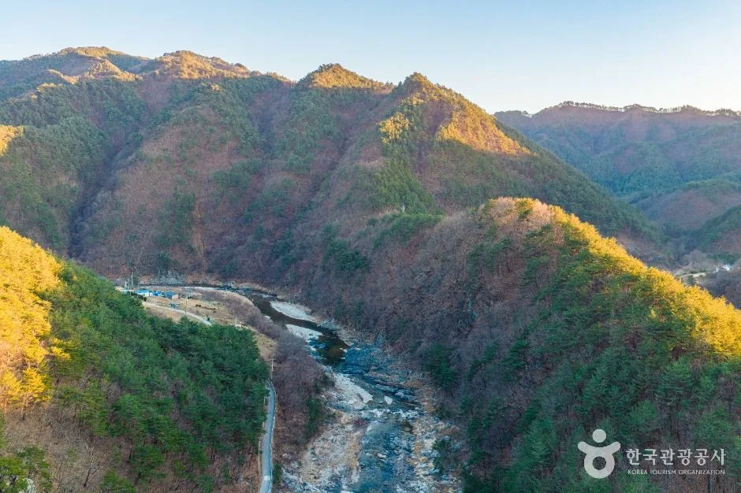

▲ "천축산 불영사" 현판이 걸린 일주문. 촬영 시기는 확인하지 못했다. 사진=한국관광공사
"울진 금강소나무숲길은 2025.12.1~2026.04.30 까지 입산통제 기간 입니다. 개방시기는 추후 홈페이지에 공지 예정입니다." 숲나들e 울진금강소나무숲길 페이지에 2026년 3월 12일자로 올라온 공지다. 이후 4월 22일에는 남부지방산림청 울진국유림관리소가 5월 2일부터 개장한다고 밝혔다는 보도가 나왔고(산림청·울진군 보도자료 원문은 찾지 못했다), 8월 24일에는 숲밥 DAY 프로그램 공지가 올라왔다. 이 숲길은 예약 없이는 걸을 수 없고, 같은 금강송면의 불영사(성인 2,000원)와 불영사계곡 드라이브는 예약 없이 갈 수 있다. 이 글은 숲나들e, 울진군 문화관광 누리집, 한국관광공사 TourAPI, 경북동해안지질공원 자료를 2026년 10월 9일에 직접 열어 확인한 값만 썼다. 확인하지 못한 항목은 그대로 밝혔다.
💡 먼저 알아둘 세 가지
① 숲길 탐방은 숲나들e 예약이 필수. 2026년 4월 보도(남부지방산림청 울진국유림관리소 발표 인용)는 구간별 인원을 제한하는 "예약탐방가이드제"로 운영한다고 전했다. 2026년 탐방 요금은 숲나들e 페이지에서 확인하지 못했다.
② 불영사는 개인 성인 2,000원, 08:00~17:00, 연중무휴. 울진군 문화관광 누리집 요금표와 TourAPI 값이다.
③ 겨울 입산통제가 있다. 지난 시즌 통제 기간은 2025년 12월 1일~2026년 4월 30일이었다. 올겨울 통제 일정은 공지를 확인하지 못했다.
1. 한눈에 보기 — 불영사·계곡·숲길 이용 정보
| 명소 | 개방·운영 | 요금 | 예약·주차 | 확인 출처 |
|---|---|---|---|---|
| 불영사(금강송면 불영사길 48) | 08:00~17:00, 연중무휴 | 개인 성인 2,000원·군인/청소년 1,500원·어린이 1,000원, 단체(30인 이상) 1,800/1,200/800원 | 예약 불필요(별도 안내 없음). 주차 가능, 주차 요금은 확인하지 못함 | 울진군 문화관광 누리집 요금표, TourAPI |
| 불영사계곡(근남면 행곡리~금강송면 하원리) | 자연 명승, 별도 개방 시간 안내 없음 | 별도 요금 안내 없음 | 주차 요금 확인하지 못함 | 울진군 문화관광 누리집 |
| 울진금강소나무숲길(구간별 출발지 다름) | 2026년 5월 2일 개장 보도. 겨울 입산통제 있음. 울진군 문화관광 안내(게시일 없음)에는 "매주 화요일 휴무"가 적혀 있으나 구 예약 사이트 주소가 섞인 오래된 문구로 보여 확정하지 않음 | 탐방 요금은 숲나들e에서 확인하지 못함(숲밥 DAY 프로그램 참가비 10,000원은 별도) | 숲나들e 사전예약 필수, 가족탐방코스·구간별 예약 | 숲나들e, 울진국유림관리소 보도 |
| 금강송 에코리움(금강송면 십이령로 552) | 개방 시간 확인하지 못함 | 2025년 5월 보도자료는 "무료로 관람"이라고 안내 | 예약 방식 확인하지 못함 | 한국관광공사 TourAPI, 2025.5.1 보도자료 |
숲길 문의는 울진금강소나무숲길 안내센터 054-781-7118(숲나들e에는 782-6118도 함께 표기), 불영사 054-783-5004, 울진군 문화관광 담당 054-789-6901이다. 숲나들e 통합고객센터는 1588-3250이다. 숲나들e 울진금강소나무숲길 바로가기
▲ "천축산 불영사" 현판이 걸린 일주문. 촬영 시기는 확인하지 못했다. 사진=한국관광공사
2. 숲길은 지금 운영 중인가 — 2026년 공지 흐름
숲길이 열려 있는지는 날짜별 공지를 이어 보면 가장 정확하다. 숲나들e 페이지와 보도에서 확인한 순서를 표로 정리했다.
| 날짜 | 내용 | 출처 |
|---|---|---|
| 2026.3.12 게시 | 2025.12.1~2026.4.30 입산통제 기간, 개방 시기는 추후 공지 | 숲나들e 울진금강소나무숲길 페이지 |
| 2026.4.22 보도 | 동절기 산불 예방·산림유전자원 보호로 통제했던 숲길을 5월 2일부터 개장, 5개 구간 개방, 오백년소나무길 노선 변경(장군소나무 공개), 숲나들e 사전예약 필수, 구간별 인원 제한 | 남부지방산림청 울진국유림관리소 발표를 인용한 보도(국제일보·치매동행 2곳에서 같은 내용 확인, 공식 보도자료 원문은 못 찾음) |
| 2026.8.24 게시 | 숲밥 DAY 프로그램(8.29·9.5·9.12 토요일 3회, 3-1구간 화전민옛길·금강송에코리움, 참가비 10,000원, 80명) | 숲나들e 울진금강소나무숲길 페이지 |
| 게시일 없음 | 구 숲길 누리집 팝업 공지: 1구간 노선 임시 변경(단체만 전화접수), 2구간 전곡리 달맞이길로 변경(단체만, 중식 신청 불가), 3구간 노선 변경(너삼밭-장군소나무-금강송군락지-오백년소나무-너삼밭 11.8km), 4구간 중식 신청 불가, 1-1구간 시범 운영 | 울진금강소나무숲길 구 누리집(uljintrail.or.kr) |
| 2026.10.9 확인 | 숲나들e 예약 메뉴에 1구간·2구간·3구간·3-1구간·4구간·가족탐방코스가 있고, 폐쇄·중단 공지는 없음 | 숲나들e 울진금강소나무숲길 페이지 |
4월 22일 보도에서 박소영 울진국유림관리소장은 "산림유전자원 보호를 위해 반드시 정해진 경로를 준수하고 예약 시스템을 통해 사전 신청 후 방문해 주시길 당부드린다"고 밝힌 것으로 전해졌다. 이 글의 제목은 그 발언의 일부다. 이 보도 외에 산림청·남부지방산림청·울진군의 2026년 개장 보도자료 원문은 이번에 찾지 못해, "5월 2일 개장"은 보도 내용으로만 적는다.
✅ 운영 여부 판단 기준
· 숲나들e 예약 메뉴에 구간이 표시돼 있고 8월 24일 숲밥 DAY 공지(8.29~9.12 3회)가 올라와 있어 2026년 가을 운영 중으로 보인다. 폐쇄·중단 공지는 확인하지 못했다. 다만 10월 9일 기준 예약 가능 날짜와 잔여 인원은 확인하지 못했다
· 구 누리집 팝업 공지(게시일 없음)는 1·2구간 노선 변경을 "단체만 가능(전화접수)"으로 안내한다. 개인 예약 가능 구간은 숲나들e와 안내센터에서 확인해야 한다
· 단, 2026년 5월 개방 구간이 5개라는 보도와 숲나들e 예약 메뉴(5개 구간 + 가족탐방코스)가 어떤 구간을 가리키는지 공식 자료에서 일일이 대조하지는 못했다
· 예약 메뉴에 5구간(보부천길)은 없고, 구간 이름도 어긋난다(2구간은 안내 목록에 "한나무재길", 예약 메뉴에 "전곡리 달맞이길"). 구 숲길 누리집(uljintrail.or.kr)에는 "홈페이지 리뉴얼 중, 안내센터(054-781-7118, 782-6118)로 문의" 공지가 떠 있다
· 올겨울 입산통제 기간은 공지를 확인하지 못했다
3. 구간별 거리 — 숲나들e에 적힌 수치
숲나들e 페이지가 적은 구간별 거리는 1구간 보부상길 13.5km, 2구간 한나무재길 9.6km, 3구간 오백년소나무길 16.3km, 3-1구간 화전민옛길 9.0km, 4구간 대왕소나무길 10.4km, 5구간 보부천길 15.3km다. 예약 메뉴에는 구간명 옆에 9시·10시가 표기돼 있는데, 설명이 없어 출발 시각으로 보이는 값이라고만 적는다. 소요 시간과 난이도는 숲나들e 페이지에 없었다. 2021년 국가숲길 지정 보도자료(산림청)는 전체를 7개 노선 79.4km로 소개했다. 다만 3구간은 구 숲길 누리집 팝업 공지(게시일 없음)가 노선 변경 후 "너삼밭-장군소나무-금강송군락지-오백년소나무-너삼밭(11.8km)"로 안내해 숲나들e의 16.3km와 다르다. 4월 22일 보도도 오백년소나무길 노선 변경을 전했으므로 최신 거리는 11.8km일 수 있고, 어느 쪽이 맞는지는 확인하지 못했다. 울진군 문화관광 숲길 안내(게시일 없음)는 1·2-1·3·4구간 체계로 적어 숲나들e(1·2·3·3-1·4·5구간)와 번호 체계가 다르다.

▲ 숲나들e 안내의 구간별 거리와 예약 메뉴 표기, 구 누리집의 3구간 노선 변경 공지(11.8km)를 정리한 도표. 소요 시간은 공식 페이지에 없어 넣지 않았다. 도표=CarPrism
| 구간 | 소개문의 설명 |
|---|---|
| 1구간 보부상길 | 산림유전자보호구역과 산양 서식지가 포함된 길. 북면 두천리 출발, 십이령(열두 고개)을 넘던 보부상 길 |
| 2구간 한나무재길 | 천연기념물 제408호 쌍전리 산돌배나무(수령 약 250년) 소개. 출발지는 금강송면 전곡리 |
| 3구간 오백년소나무길 | 생태경영림으로 지정된 최고의 금강송 군락지. 왕복이지만 가는 길과 오는 길이 달라 중간에 나갈 수 없음. 2026년 노선 변경 보도(장군소나무 공개) |
| 3-1구간 화전민옛길 | 숲길에서 가장 짧은 구간으로 소개. 금강소나무를 볼 수 있는 구간 |
| 4구간 대왕소나무길 | 원시림이 보존돼 계절별 희귀 식물을 볼 수 있다고 소개. 구간 이름의 대왕소나무(600년 추정)는 2025년 4월 16일 고사로 판명됐다고 산림청이 2025년 5월 7일 밝혔고, 자연 상태로 두기로 했다(후계목 보존, '장군소나무(가칭)'를 대체목으로 지정) |
| 5구간 보부천길 | 숲나들e 거리 목록에는 있으나 예약 메뉴에는 없음 |
한국관광공사 TourAPI의 울진 코스 소개문(수정 2026년 8월 20일)은 "소광리 금강소나무 숲은 우리나라 최대의 금강소나무 군락지"라고 적는다. 이 소광리 숲이 3구간 오백년소나무길이 지나는 곳이다.

▲ 유리창이 큰 전시관 건물 외관. 금강송 에코리움으로 소개된 사진이며 촬영 시기는 확인하지 못했다. 사진=한국관광공사

▲ 나무 사이로 이어진 포장 산책로. 금강송 에코리움 일대로 소개된 사진이며 촬영 시기는 확인하지 못했다. 사진=한국관광공사
4. 불영사 — 요금·시간·문화유산
울진군 문화관광 누리집의 "주요관광지 요금" 페이지에 불영사 개인 요금이 어른 2,000원, 군인·청소년 1,500원, 어린이 1,000원, 단체(30인 이상)는 1,800원·1,200원·800원으로 올라 있다. 이용 시간은 TourAPI에 08:00~17:00, 연중무휴, 주차 가능으로 표기돼 있다. 요금표 게시일은 페이지에 적혀 있지 않았고, 2023년 문화재 관람료 면제 제도와 불영사의 관계는 공식 자료에서 확인하지 못했다. 방문 전 사찰(054-783-5004)에 요금을 확인하는 것이 안전하다.
TourAPI 소개문에 따르면 불영사는 울진군 천축산에 있는 대한불교조계종 제11교구 불국사의 말사로, 진덕여왕 5년(651)에 의상대사가 세웠다. 동해 일원 최대의 비구니 참선도량으로 알려져 있다. 울진군 문화관광 누리집이 나열하는 지정문화재는 응진전(보물 제730호), 대웅보전(보물 제1201호), 〈불영사 영산회상도〉(1735년, 보물 제1272호), 삼층석탑(경상북도 유형문화재 제135호) 등이다. 울진군은 불영사가 국도 36호선을 따라 봉화 방향으로 가다 태백산맥을 넘기 전 불영사계곡이 시작하는 곳에 있다고 설명한다. 대중교통은 울진시외버스터미널 건너편 정류장에서 금강송면 방면 버스를 타면 약 25분 걸린다고 안내한다. 울진군 불영사 안내 바로가기 주요관광지 요금 바로가기

▲ 단청이 화려한 전각과 석탑이 보이는 사찰 마당. 불영사로 소개된 사진이며 어느 전각인지, 촬영 시기는 확인하지 못했다. 사진=한국관광공사

▲ 연못에 전각이 비친 사찰 풍경. 불영사로 소개된 사진이며 촬영 시기는 확인하지 못했다. 사진=한국관광공사
5. 불영사계곡 드라이브 — 공식 설명에서 확인되는 범위
울진군 문화관광 누리집은 드라이브 코스 안내에서 "울진군 근남면 수산리에서 영주방면으로 가는 불영계곡길(36번도로)"을 관광지를 찾아가며 드라이빙 기분을 낼 수 있는 좋은 길로 꼽는다. 불영사계곡은 근남면 행곡리에서 금강송면 하원리까지 15km에 이르고, 1979년 12월 11일 명승 제6호로 지정됐으며, 봄·가을 드라이브 코스로 각광받는다고 소개한다. 계곡 중간에 전망대 2곳(불영정·선유정)이 있고, 의상대·창옥벽·조계등·부처바위·중바위·거북돌·소라산 같은 절경지가 이어진다. 경북동해안지질공원은 이 계곡이 약 20억 년 전 편마암으로 이뤄져 2017년 국가지질공원으로 지정됐다고 설명한다.

▲ 바위 절벽 사이로 계곡물이 흐르는 협곡. 불영계곡으로 소개된 사진이며 촬영 시기는 확인하지 못했다. 사진=한국관광공사

▲ 계곡 옆으로 목재 난간이 이어진 길. 불영사 일대로 소개된 사진이며 촬영 시기는 확인하지 못했다. 사진=한국관광공사

▲ 녹음이 우거진 산 아래 계곡. 불영계곡으로 소개된 사진이며 촬영 시기는 확인하지 못했다. 사진=한국관광공사
💡 공식 확인이 안 된 부분
· "국도 36호선 경관도로"라는 별도 지정 여부는 공식 자료에서 확인하지 못했다. 울진군은 "불영계곡길(36번도로)"이라는 표현만 쓴다
· 구간 거리·소요 시간·도로 사정·주차 가능 지점은 공식 자료가 없어 쓰지 않았다
· 지질공원 소개문은 피서철에 안전요원을 배치한다고만 밝히며, 가을철 물놀이 안전 안내는 없다
6. 산불철과의 관계 — 입산통제는 두 겹이다
금강소나무숲길 입산통제는 지난 시즌 2025년 12월 1일부터 2026년 4월 30일까지였다. 2026년 4월 보도는 재개장 이유를 "동절기 산불 예방과 산림유전자원 보호를 위해 통제했던 숲길을 다시 연다"고 전했다. 통제 사유에 산불 예방이 들어 있지만, 통제 날짜는 산림청의 전국 산불조심기간(2025년 가을철은 10월 20일~12월 15일이었다)과 다르게 숲길 운영 일정으로 따로 정해졌다. 울진군 문화관광 숲길 안내(게시일 없음)에는 "산불조심 기간에는 산림보호를 위해 출입을 통제함"이라는 문구도 있어 두 제도가 완전히 무관하다고 단정하기는 어렵다. 산불조심기간과 탐방로 통제가 서로 다른 제도라는 점은 산불철 탐방로 통제 기사에 정리했다. 올가을 산불조심기간 공고와 올겨울 숲길 통제 일정은 2026년 10월 9일 기준으로 확인하지 못했다. 지난 시즌 통제가 12월 1일부터였던 만큼 11월 중에는 열려 있을 가능성이 있지만, 올해 일정은 공지 전까지 알 수 없다.
| 구분 | 기간 | 출처 | 2026년 공지 상태 |
|---|---|---|---|
| 금강소나무숲길 입산통제(지난 시즌) | 2025.12.1~2026.4.30 | 숲나들e 공지(2026.3.12 게시) | 올겨울 일정 공지 없음 |
| 전국 가을철 산불조심기간(2025년 기준) | 2025.10.20~12.15 | 산림청 공고(카프리즘 산불철 기사 정리) | 2026년 공고 미확인 |
| 불영사 | 연중무휴(TourAPI) | TourAPI(수정 2026.3.17) | 사찰 휴관·통제 공지 확인하지 못함 |
2022년 울진·삼척 산불 이후 숲 복구 현황은 산림청·울진군의 공식 통계를 이번에 확인하지 못해 싣지 않는다. 가을 단풍 시기도 산림청 2026 단풍 지도 기사(관련 기사)와 단풍 주말표 기사에서 불영계곡·금강송면 날짜를 확인하지 못해 쓰지 않는다.

▲ 능선이 겹쳐진 골짜기와 하천. 울진 왕피천 일대로 소개된 사진이며 촬영 시기는 확인하지 못했다. 사진=한국관광공사
7. 하루로 묶는다면 — 확인된 수치로만 짠 순서
한국관광공사 2023년 7월 여행기사는 당일 코스를 "울진금강소나무숲길 → 금강송테마전시관 → 불영사"로 소개했다. 같은 기사는 가족탐방로 출발 지점(금강송면 대광천길 83)에서 불영사 주차장까지 18km쯤 구불구불한 도로를 내려온다고 적었으나, 2023년 기사라 현재 도로·시간으로 확정하지 않는다. 같은 기사의 "탐방 무료", "화요일 휴무", "숲밥 1인 8,000원"은 2023년 안내라 2026년 값으로 쓰지 않았고, 숲나들e에서는 이 항목들을 확인하지 못했다. 화요일 휴무는 울진군 문화관광 숲길 안내에도 적혀 있으나 게시일이 없어, 가기 전 안내센터에 확인하는 편이 안전하다.
| 선택지 | 일정 | 근거 |
|---|---|---|
| A. 숲길 중심 | 숲나들e에서 구간 예약 → 안내 문자의 출발 지점에 도착 → 구간 탐방(소요 시간은 공식 자료에 없음) | 숲나들e 예약 메뉴 |
| B. 불영사 중심 | 08:00~17:00 사이 입장(개인 성인 2,000원) → 불영사계곡 전망대(불영정·선유정)와 36번 도로 드라이브 | TourAPI, 울진군 문화관광 누리집 |
| C. 같은 날 두 곳 | 숲길 구간 종료 시각과 불영사 마감 17:00이 맞는지 공식 자료로 계산할 수 없음 — 구간 소요 시간·이동 시간 미확인 | 공식 자료 부족으로 권장하지 않음 |
| 피할 시기 | 겨울 입산통제 기간(지난 시즌 12.1~4.30), 예약하지 않은 당일 방문 | 숲나들e 공지 |
8. 같은 울진·동해안에서 이어 갈 곳 — 이미 다룬 기사
울진 성류굴의 입장료·관람 시간은 울진 성류굴 기사에서 다뤘고, 동해안 쪽 계곡 트레킹은 동해 무릉계곡 베틀바위 기사, 해안 드라이브는 7번 국도 드라이브 기사에 있다. 남쪽 포항의 폭포 계곡은 같은 날 발행한 포항 내연산 12폭포 기사, 단풍 날짜 계산은 단풍 절정 계산 기사를 보면 된다.
새 소식도 하나 있다. 아이뉴스24는 산림청이 10월 1일부터 두 달간 동서트레일 32개 구간 512km를 대국민 시범 개통하며, 대피소 백패킹 예약은 9월 29일부터 숲나들e에서 받는다고 보도했다. 이 사업은 금강소나무숲길 예약 운영과 별개이고, 울진 구간의 거리와 운영 방식은 이번에 공식 자료로 확인하지 못했다.
✅ 출발 전 체크리스트
· 금강소나무숲길: 숲나들e 사전예약 필수, 2026년 5월 2일 개장 보도(공식 보도자료 원문은 확인하지 못함), 폐쇄 공지는 확인하지 못함. 3구간 노선 변경(거리 11.8km 안내)과 1·2구간 단체 한정 안내(구 누리집)는 안내센터 054-781-7118에 확인
· 탐방 요금·휴무·구간별 소요 시간·구간별 인원 한도는 숲나들e에서 확인하지 못함(숲밥 DAY 참가비 10,000원은 별도 프로그램)
· 불영사: 08:00~17:00, 연중무휴, 개인 성인 2,000원·청소년 1,500원·어린이 1,000원, 054-783-5004. 요금표 게시일은 확인하지 못함
· 불영사계곡: 근남면 행곡리~금강송면 하원리 15km, 명승 제6호, 전망대 불영정·선유정, 36번 도로
· 올겨울 숲길 통제일, 올가을 산불조심기간, 불영사 주차 요금, 숲 복구 현황은 미확인
· 확인일: 2026년 10월 9일
9. 정리
울진 금강소나무숲길은 2026년 5월 2일 개장한다는 보도가 나온 뒤 숲나들e 사전예약으로 운영되는 것으로 보이고, 불영사는 개인 성인 2,000원·08:00~17:00·연중무휴다. 불영사계곡은 15km 명승 제6호이며 울진군은 36번 도로를 드라이브 길로 꼽는다. 숲길 구간 거리는 숲나들e에 6개(9.0~16.3km)가 표기돼 있으나 3구간은 노선 변경 후 11.8km라는 구 누리집 공지가 있다.
숲길 탐방 요금, 구간별 소요 시간·인원 한도, 올겨울 입산통제 일정, 올가을 산불조심기간 공고, 불영사 주차 요금, 2022년 산불 이후 복구 현황, 가을 단풍 시기는 공식 자료로 확인하지 못했다. 가기 전 숲길 안내센터(054-781-7118)와 불영사(054-783-5004)에 전화로 확인하자.